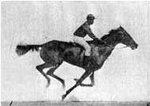

Raster graphics:
Each pixel is separately defined.
Vector graphics:
Mathematical formulas describe lines and shapes.
Static
Moving
Interactive

Raster
Vector
Motion
Interactive
2D
3D
Images (GIF, BMP, PNG, JPG)
✔
✖
✔
✖
✔
✖
DOM + JS (Example )
✔
✖
✔
✔
✔
✖
Plugins (Flash, Java, X3D, SVG, VRML)
✔
✔
✔
✔
✔
✔
Browser-specific technologies (IE's VML)
✖
✔
✔
✔
✔
✖
The problems with plugins
Require user to do more work Can have sub-par performance Not integrated with rest of website Open up security holes Don't work everywhere
Raster
Vector
Motion
Interactive
2D
3D
SVG
✖
✔
✔
✔
✔
✖
Canvas
✔
✖
✔
✔
✔
✖
WebGL
✖
✔
✔
✔
✔
✔
CSS3
✔
✖
✔
✔
✔
✔
SVG (Scalable Vector Graphics)
An XML-based vector image format for two-dimensional graphics that has support for interactivity and animation.
<svg height="200" width="600" xmlns=http://www.w3.org/2000/svg>
<circle id="yellowcircle" cx="50" cy="50" r="50" fill="yellow"/>
<circle id="blackcircle" cx="30" cy="30" r="10" fill="black"/>
<circle id="blackcircle" cx="70" cy="30" r="10" fill="black"/>
<ellipse id="blackellipse" cx="50" cy="75" rx="20" ry="8" fill="black"/>
<ellipse id="yellowellipse" cx="50" cy="73" rx="20" ry="8" fill="yellow"/>
</svg>
SVG: Features
Shapes
Paths
Text/Fonts
Fill/Stroke/Colors
Gradients/Patterns
Clipping/Masking
Filters
DOM Events
Scripting
Animation
SVG: Shapes
<circle cx="100" cy="50" r="25" fill="black" />
<rect x="0" y="10" width="100" height="75" fill="red" />
<ellipse cx="90" cy="50" rx="50" ry="45" fill="orange" />
<polygon points="10,5 100,45 100,5 100,100" fill="blue" />
SVG: Text, Transforms, Scripting
<svg version="1.1" width='700px' height='400px'
xmlns="http://www.w3.org/2000/svg"
xmlns:xlink="http://www.w3.org/1999/xlink">
<g id="textBox">
<circle id='textCirc' cx='100' cy='100' r='75px' fill='yellow' opacity='0.25'
onclick='document.getElementById("textCirc").setAttribute("fill", "orange")'/>
<text x='100px' y='100px' style='fill: blue; font-weight: bold; font-size:20px;'>
<tspan>Text on top</tspan>
</text>
</g>
<use x='200' y='0' xlink:href='#textBox' transform="rotate(20)"/>
</svg>
Text on top
SVG: Ways of Using
Embedded file
Inline
Scripted
Cackgrounds in CSS
SVG: Embedded File
<object type="image/svg+xml" style="border:none; width:550px; height:540px; background: white;" data="media/famoustiger.svg"></object>
OR:
<img src="media/famoustiger.svg">
caniuse.com: SVG basic
SVG: Inline
<!doctype html>
<html>
<svg>
<defs>
<linearGradient id="MyGradient">
<stop offset="5%" stop-color="#F60" />
<stop offset="95%" stop-color="#FF6" />
</linearGradient>
</defs>
<circle id="myCircle" class="important" cx="50%" cy="50%" r="100"
fill="url(#myGradient)"/>
</svg>
</html>
caniuse.com: SVG inline
SVG: Scripted (Blobular Demo)
SVG: Tools & Libraries
SVGweb : cross-browser SVG polyfillRaphaëlJS : cross-browser vector graphics JS librarygRaphael : SVG-based charting libraryWijMo : UI widgets and charts
Animated Chart Demo
Canvas
An HTML tag that creates a blank canvas for JavaScript to draw onto.
<canvas id="myCanvas"></canvas>
<script>
var canvas = document.getElementById('myCanvas');
var context = canvas.getContext('2d');
context.strokeStyle = '#000000';
context.fillStyle = '#FFFF00';
context.lineWidth = 4;
context.beginPath();
context.arc(100,75,50,0*Math.PI,2*Math.PI,true);
context.closePath();
context.stroke();
context.fill();
context.lineWidth = 2;
context.beginPath();
context.arc(100,65,40,0.2*Math.PI,0.8*Math.PI,false);
context.stroke();
context.beginPath();
context.arc(80,60,10,0*Math.PI,2*Math.PI,false);
context.stroke();
context.beginPath();
context.arc(120,60,10,0*Math.PI,2*Math.PI,false);
context.stroke();
</script>
Canvas: Space Noodles Demo
Basic Shapes
Draws a rectangle using the current fill style
fillRect(x, y, width, height);
Draws the outline of a rectangle using the current stroke style
strokeRect(x, y, width, height);
Clears all pixels within the given rectangle
clearRect(x, y, width, height);
Lines and Paths
Creates a new subpath at the given point
moveTo(x, y);
Draws a straight line from the previous point
lineTo(x, y);
Adds a new closed rectangular subpath
rect(x, y, width, height);
Adds a subpath along the circumference of the described circle, with the angles defined
arc(x, y, radius, startAngle, endAngle, counterclockwise);
Lines and Paths
Resets the current path
beginPath();
Closes the current subpath and starts a new one
closePath();
Fiils the subpaths with the current fill style
fill();
Outlines the subpaths with the current stroke style
stroke();
Rectangular Smiley
<canvas id="smileyRect" width="250" height="250" style="display:block;"></canvas>
<script>
$(document).ready(function() {
var canvas = document.getElementById('smileyRect');
var context = canvas.getContext('2d');
context.rect(25, 25, 200, 200); // Head
context.rect(90, 80, 20, 20); // Left Eye
context.rect(140, 80, 20, 20); // Right Eye
context.moveTo(50, 180); // Mouth
context.lineTo(200, 180);
context.lineWidth = 10;
context.strokeStyle = "black";
context.stroke();
});</script>
Circle Smiley
<canvas id="smileyCircle" width="250" height="250" style="display:block;"></canvas>
<script>
$(document).ready(function() {
var canvas = document.getElementById('smileyCircle');
var context = canvas.getContext('2d');
context.arc(110, 110, 100, 0, Math.PI*2, true); // Head
context.moveTo(165, 120);
context.arc(110, 120, 55, 0, Math.PI, false); // Mouth
context.moveTo(90, 75);
context.arc(85, 75, 5, 0, Math.PI*2, true); // Left eye
context.moveTo(135,75);
context.arc(140, 75, 5, 0, Math.PI*2, true); // Right eye
context.lineWidth = 10;
context.strokeStyle = "black";
context.stroke();
});
</script>
Animation
window.requestAnimationFrame(function() {
redrawCanvas(); // your function here
});
Canvas: Snake Demo
WebGL
3D in the browser and without plugins
GPU Processing, directly on the video card
It uses the <canvas> tag but with another context
<canvas id="myDrawing" width="500" height="500">
var canvas = document.getElementById("myDrawing");
context = canvas.getContext("experimental-webgl");
WebGL: Renderers
Create a WebGLRenderer
var renderer = new THREE.WebGLRenderer({antialias: true});
renderer.setSize(document.body.clientWidth,
document.body.clientHeight);
Put it on the DOM
document.body.appendChild(renderer.domElement);
Set some color
renderer.setClearColorHex(0xFFFFFF, 1.0);
renderer.clear();
Demo
WebGL: Cameras
Create a Camera
var camera = new THREE.PerspectiveCamera(45, width/height, 1, 10000);
camera.position.z = 300;
Make a Scene with a Cube
var scene = new THREE.Scene();
var cube = new THREE.Mesh(new THREE.CubeGeometry(50,50,50),
new THREE.MeshBasicMaterial({color: 0x1fd230}));
scene.add(cube);
And render the Scene from the Camera
renderer.render(scene, camera);
Demo
WebGL: Animation
function animate(t) {
// spin the camera in a circle
camera.position.x = Math.sin(t/1000)*300;
camera.position.y = 150;
camera.position.z = Math.cos(t/1000)*300;
// you need to update lookAt every frame
camera.lookAt(scene.position);
// renderer automatically clears unless autoClear = false
renderer.render(scene, camera);
window.requestAnimationFrame(animate, renderer.domElement);
};
animate(new Date().getTime());
Demo
WebGL: Libraries & Tools
Three.JS : JS abstraction library for 3d in the browserJSArToolkit : Augmented reality in JSJebGL : Java fallback for WebGLCWebGL : Canvas fallback for WebGL
CSS 3D Transforms
CSS lets you specify keyframes, animations, and transitions for styles.
#tardis {
animation-name: disappear;
animation-duration: 1s;
animation-timing-function: linear;
animation-iteration-count: 1;
animation-delay: 2s;
}
@keyframes disappear {
from { opacity: 1; }
to { opacity: 0; }
}
Spinning tardis demo
caniuse.com: CSS 3d transforms
Raster
Vector
Motion
Interactive
2D
3D
SVG
✖
✔
✔
✔
✔
✖
Canvas
✔
✖
✔
✔
✔
✖
WebGL
✖
✔
✔
✔
✔
✔
CSS3
✔
✖
✔
✔
✔
✔